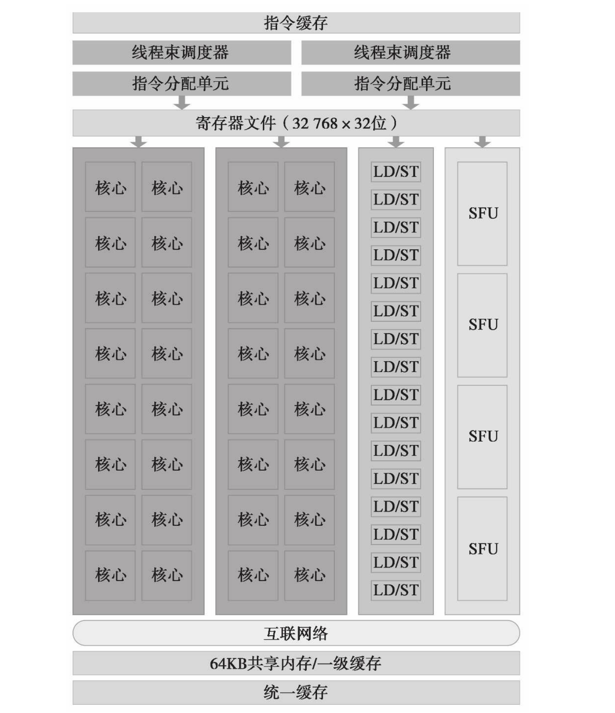

§硬件架构
GPU的架构是围绕流式多处理器(Streaming Multiprocessor, SM)搭建的，一个GPU有多个SM，每个SM都可以支持上千个线程并发执行，因此一个GPU可以并发执行数千数万个线程。一个SM关键组件有：CUDA核心、共享内存/一级缓存、寄存器文件、访存单元、特殊功能单元、线程束调度器，如下图所示(Fermi架构)：

当启动一个线程网格来执行核函数时，它将被分发到可用的SM上执行。一个线程块一旦被调度到一个SM上，其中的线程将在这个SM上并发执行直到结束，不会再将调度到其它SM上，因此线程块是任务调度的单位。一个SM上可以容纳多个线程块，根据SM可用资源的数量，线程网格中的多个线程块可能被调度到同一个SM上。当SM上有线程块结束时，就会有新的线程块调度进来。
一个SM可以并发执行上千个线程，为了管理数量庞大的线程，CUDA设计了一种架构叫做SIMT (Single-Instruction, Multiple-Thread)。SIMT类似于SIMD(Single Instruction, Multiple Data)，两者都是在不同的数据上执行相同的指令，但SIMT允许线程独立执行。
在SIMT架构中，每32个线程为一组，称为线程束(warp)，线程束内的所有线程执行相同的指令，每条指令都有自己的地址计数器和和寄存器状态，利用自身的数据执行当前的指令。每个SM都会将分配给它的线程块划分为多个线程束，然后在SM上执行。
在硬件上，以Pascal架构为例，一个GPU由多个GPC (Graphics Processing Clusters)组成，一个GPC由多个TPC (Texture Processing Clusters)组成，一个TPC由多个SM和纹理单元组成。如下图所示：
局部放大如下图：
一个SM的结构大致为：
一个SM的硬件资源被分为两组，每组都由CUDA Core(绿色部分，也叫Streaming Processor, SP)、双精度单元(DP Unit)，访存模块(LD/ST)、特殊功能单元(SFU, Special Function Unit)、寄存器文件等组成。除此之外，每个SM都有自己的指令缓存、L1缓存和共享内存。在Fermi架构和Kepler架构中，共享内存和一级缓存是同一个硬件，可以由API配置分配方案，而从Maxwell架构开始，一级缓存和纹理内存合并为一个硬件，而共享内存独立出来，独占64KB。
在Pascal架构中，一个SM有64个CUDA Core和32个DP Unit，CUDA Core只能做单精度浮点运算和整型运算，因此GPU的双精度计算能力是不如单精度的。一个CUDA Core的结构大致为：
Pascal架构中，一个SM中的功能部件变少了，但SM的数量变多了，共享内存和寄存器等资源变得宽裕了，因此整体性能提高了。
在Pascal架构中，内存体系为：
L1缓存和纹理内存都是每个SM都有一份，而L2缓存和显存是全局的，为所有SM共享。越靠近SM的储存其容量越低，但速度越快。
§软件架构
从CUDA编程的角度来看，没有硬件的细节丰富。软件和硬件对应关系大致为：
在CUDA编程中，线程被组织成网格=>线程块=>线程这几个层次。当一个线程块的网格被启动后，网格中的线程块分布在SM中。一旦线程块被调度到一个SM上，线程块中的线程会被进一步划分为线程束。一个线程块将在一个SM上执行直到结束，多个线程块可能被调度到同一个SM上执行。网格由多个线程块组成，网格内线程块的数量可能会超过硬件所能容纳的上限，不能容纳的部分将等待已被调度执行的线程块退出，让出硬件资源，然后被调度执行。
每个SM的硬件资源数量都是有限的，在设置线程网格大小时必须考虑到硬件资源数量的限制，这些硬件资源有寄存器、共享内存、SM所能容纳的线程数量等。CUDA使用计算能力(compute capabilities)来描述这些硬件资源的限制，计算能力有两位数字，类似于3.5、5.2等。NVIDIA的GPU有许多型号，性能各不相同，但在进行CUDA编程时不需要考虑到具体的GPU型号，仅需要考虑计算能力即可获得编程所需的基本硬件信息。GPU与其对应的计算能力可以从这个网站获得：https://developer.nvidia.com/cuda-gpus，比如较新一些GPU的计算能力如下表所示：
| GPU | Compute Capability |
|---|---|
| NVIDIA TITAN RTX | 7.5 |
| Geforce RTX 2080 Ti | 7.5 |
| Geforce RTX 2080 | 7.5 |
| Geforce RTX 2070 | 7.5 |
| Geforce RTX 2060 | 7.5 |
| NVIDIA TITAN V | 7.0 |
| NVIDIA TITAN Xp | 6.1 |
| NVIDIA TITAN X | 6.1 |
| GeForce GTX 1080 Ti | 6.1 |
| GeForce GTX 1080 | 6.1 |
| GeForce GTX 1070 | 6.1 |
| GeForce GTX 1060 | 6.1 |
| GeForce GTX 1050 | 6.1 |
| GeForce GTX TITAN X | 5.2 |
| GeForce GTX TITAN Z | 3.5 |
| GeForce GTX TITAN Black | 3.5 |
| GeForce GTX TITAN | 3.5 |
| GeForce GTX 980 Ti | 5.2 |
| GeForce GTX 980 | 5.2 |
| GeForce GTX 970 | 5.2 |
| GeForce GTX 960 | 5.2 |
| GeForce GTX 950 | 5.2 |
| GeForce GTX 780 Ti | 3.5 |
| GeForce GTX 780 | 3.5 |
可以看到计算能力不是连续变化的，较新的GPU的计算能力只有十来个，也就是说有些GPU虽然不同，但在CUDA编程时几乎没有区别。此外，计算能力不代表性能高低，如750ti的计算能力是5.0，但它的性能显然不如计算能力为3.5的780。一些常见的计算能力对应的部分硬件信息如下表所示：
完整的表见https://docs.nvidia.com/cuda/cuda-c-programming-guide/index.html#compute-capabilities。
除了从NVIDIA的网站查询外，CUDA还有一组函数可以在程序中查询硬件信息，如
|
|
cudaDeviceProp是一个非常大的结构体，用于返回整个GPU的硬件信息，其部分成员为：
|
|
也可以使用cudaDeviceGetAttribute获得某个属性而不用全部返回。这些函数可以在CUDA Runtime API的5.1 Device Management一节中查到，这里不再一一列举。链接：https://docs.nvidia.com/cuda/cuda-runtime-api/group__CUDART__DEVICE.html#group__CUDART__DEVICE。
§线程束
§线程束的划分
线程束是SM中最基本的执行单元，线程束内的32个线程执行相同的指令，而操作不同的数据。一个线程块被调度到一个SM上后，会将每相邻32个线程划到一个线程束内。从软件来看，线程网格和线程块都是三维的，但在硬件的角度来看，所有的线程都被组织成了一维的。在一个线程块中，每个线程都有一个唯一的ID。对于一维的线程块，线程ID被存储在内置变量threadIdx.x中，threadIdx.x中拥有连续值的线程被分组到线程束中。如拥有128个线程的一维线程块被划分为4个线程束：
- warp 0: 0, 1, ..., 31
- warp 1: 32, 33, ..., 63
- warp 2: 64, 65, ..., 95
- warp 3: 96, 97, ..., 127
如果线程块被组织成二维或者三维的，则按照z主序、y主序的顺序计算：
- 二维：threadIdx.y * blockDim.x + threadIdx.x
- 三维：threadIdx.z * blockDim.x * blockDim.y + threadIdx.y * blockDim.x + threadIdx.x
硬件划分的线程束的边界是线程块，任何一个线程束不会跨越线程块存在，如果线程块的大小不是32的倍数，那么最后的线程束内有些线程就不是活跃线程，它们从始至终都不会做任何有效操作，但却要消耗寄存器等硬件资源，在设置线程网格大小时应当尽量避免这种情况。如一个二维线程块设置成x方向40个线程，y方向2个线程的大小，则线程块内有80个线程，必须划分成3个线程束，大小为96个线程，因此最后一个线程束内只有16个活跃线程。
§线程束分化
CUDA在GPU端的编程语言类似于c语言，也拥有c语言的控制结构，如循环、条件分支等。CPU拥有复杂的硬件，可以对条件分支进行预测，分支语句对性能的影响非常小。但GPU是相对简单的设备，没有分支预测机制。一个线程束内的所有线程需要同时执行相同的指令，如果在遇到条件分支时，同一线程束内的不同线程通过不同的路径，可能遇到问题。如：
|
|
假定一个线程束中有16个线程cond为true，执行if分支，而另外16个线程cond为false，执行else分支，则会产生一个悖论：这32个线程如何执行相同的指令？在CUDA中，如果遇到这样的情况，线程束将依次执行if分支和else分支，在执行if分支将禁用cond为false的16个线程，而执行else分支时将禁用cond为true的16个线程。这种现象称为线程束分化(warp diverge)。线程束分化将导致性能明显地下降，分支越多，性能削弱越严重。
比如下面的核函数：
|
|
每个线程束都发生线程束分化。
在CUDA中，可以使用工具nvprof进行性能分析，自然也可以检测线程束分化，命令为：
$ nvprof --metrics branch_efficiency ./a.out
Invocations Metric Name Metric Description Min Max Avg
1 branch_efficiency Branch Efficiency 100.00% 100.00% 100.00%
其中分支效率的计算方法为：
- 分支效率 = (分支数 - 分化分支数) / 分支数 x 100%
此处分支效率异常地高，这是编译器优化的结果，可以使用以下的命令查看线程束分化的次数：
$ nvprof --events branch,divergent_branch ./a.out
Invocations Event Name Min Max Avg Total
1 branch 48 48 48 48
1 divergent_branch 0 0 0 0
§占用率
CUDA Core在执行指令是串行的，当一个线程束阻塞时，SM切换执行其他符合条件的线程束来执行，理想情况下，我们想要每个SM上都有足够的线程束，保证计算资源的充分利用。为此，可以定义占用率的概念：
- 占用率 = 活跃线程数量 / 最大线程数量
占用率是针对SM定义的，它描述了SM中硬件资源的利用程度。一般而言，线程束因为访存而阻塞，此时需要有足够数量的线程才能隐藏访存的延迟，这是因为SM含有数量庞大的寄存器，线程束间的切换几乎没有开销，当一个线程束访存时，切换其它线程束执行可以尽量保证CUDA Core的忙碌。
一个SM可以容纳的最大线程数量是硬件属性，在计算能力3.0及以后的GPU中，这个数都是2048。而活跃线程数量需要根据核函数所需的硬件资源以及线程网格配置综合来看，更具体地，应当根据硬件资源和核函数的需求设置线程网格，以达到更高的占用率。CUDA提供了一个excel表格可以计算最佳线程网格配置，在windows上位于C:\Program Files\NVIDIA GPU Computing Toolkit\CUDA\v10.1\tools\CUDA_Occupancy_Calculator.xls，打开后的界面为：
设置部分放大后为：
填好计算能力和核函数对寄存器和共享储存的需求，以及线程块的大小后就可以给出最佳配置。核函数的硬件需求可以通过以下命令查看：
$ nvcc --ptxas-options=-v main.cu
ptxas info : 14 bytes gmem
ptxas info : Compiling entry function '_ZN6thrust8cuda_cub4core13_kernel_agentINS0_14__parallel_for16ParallelForAgentINS0_20__uninitialized_fill7functorINS_10device_ptrIfEEfEEyEES9_yEEvT0_T1_' for 'sm_30'
ptxas info : Function properties for _ZN6thrust8cuda_cub4core13_kernel_agentINS0_14__parallel_for16ParallelForAgentINS0_20__uninitialized_fill7functorINS_10device_ptrIfEEfEEyEES9_yEEvT0_T1_
0 bytes stack frame, 0 bytes spill stores, 0 bytes spill loads
ptxas info : Used 6 registers, 344 bytes cmem[0]
ptxas info : Compiling entry function '_ZN6thrust8cuda_cub3cub11EmptyKernelIvEEvv' for 'sm_30'
ptxas info : Function properties for _ZN6thrust8cuda_cub3cub11EmptyKernelIvEEvv
0 bytes stack frame, 0 bytes spill stores, 0 bytes spill loads
ptxas info : Used 2 registers, 320 bytes cmem[0]
ptxas info : Compiling entry function '_Z10mathKernelPfi' for 'sm_30'
ptxas info : Function properties for _Z10mathKernelPfi
0 bytes stack frame, 0 bytes spill stores, 0 bytes spill loads
ptxas info : Used 8 registers, 332 bytes cmem[0], 8 bytes cmem[2]
此外，CUDA还提供了一组函数用于在运行时根据实际GPU进行启发式配置，但要注意它们的调用开销，此处不再赘述，参考CUDA Runtime API的5.8 Occupancy一节，链接：https://docs.nvidia.com/cuda/cuda-runtime-api/group__CUDART__OCCUPANCY.html#group__CUDART__OCCUPANCY。
§并行归约
归约问题是对一个序列依次进行二元运算得到一个结果的问题，如数组求和、求最值等。当二元运算满足结合率和交换率时结果与计算次序无关，此时可以进行并行归约。在CPU的并行归约中，一般划分后的任务数量不是太多，对部分和进行归约时即使是串行计算也非常快。但对于GPU而言，情况截然不同，一个GPU可以启动数以万计的线程，如何对这几万个结果进行归约就比较考验算法了。
此节以最简单地并行求和为例，串行代码大致为：
|
|
在使用大量线程进行归约时，一般按以下两种方式处理：
- 相邻配对
- 交错配对
相邻配对将引起一系列的问题，首先是内存不连续的问题，这将导致缓存失效时需要读入更多的数据，其次是判断将哪些元素加到哪些元素上的问题，需要引入if-else分支，可能会导致线程束分化。而采用交错配对则没有这样的问题，因此在CUDA中一般采用交错配对进行并行归约，这样我们可以在O(log n)的时间复杂度内将n个求和。
交错配对的并行归约实现如下：
|
|
这段代码中，每个线程先将超出线程总数的数组元素加到自身对应的数组元素上，然后在线程块内归约，得到26个和，再利用CPU将这26个和加起来。__syncthreads是线程块同步原语，用于对线程块内的所有线程进行同步，以确保进入下一轮之前上一轮的结果都已经写入内存。
上述核函数还有可以优化的地方，当线程块内的数组长度小于等于64之后，线程块内只有前32个线程是在做有效操作的，而它们本身就执行相同的指令，也不再需要和线程块内其它线程同步。因此可以将循环展开，再对最后几个循环单独处理：
|
|
volatile关键字用于将内存声明成易变的，即内存的值可能因为本线程行为之外的行为改变，这样保证编译器在生成代码时不对此内存做任何假定，不对它的访问进行优化，每次都从内存中读取它的值。程序的其它部分和之前一样。这个版本的归约仍然存在一些问题，以后会给出一些更优的版本。
§参考
[2] https://images.nvidia.com/content/pdf/tesla/whitepaper/pascal-architecture-whitepaper.pdf.